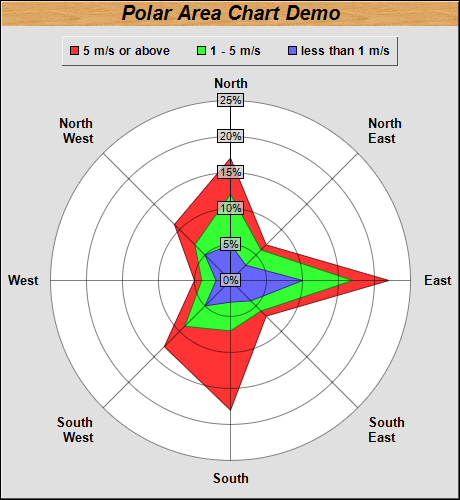

This examples demonstrates a polar area chart.
The polar area layer is created using PolarChart.addAreaLayer. In this example, 3 area layers are used. The area data are already stacked before passing to ChartDirector.
ChartDirector 7.1 (C++ Edition)
Polar Area Chart

Source Code Listing
#include "chartdir.h"
int main(int argc, char *argv[])
{
// Data for the chart
double data0[] = {5, 3, 10, 4, 3, 5, 2, 5};
const int data0_size = (int)(sizeof(data0)/sizeof(*data0));
double data1[] = {12, 6, 17, 6, 7, 9, 4, 7};
const int data1_size = (int)(sizeof(data1)/sizeof(*data1));
double data2[] = {17, 7, 22, 7, 18, 13, 5, 11};
const int data2_size = (int)(sizeof(data2)/sizeof(*data2));
const char* labels[] = {"North", "North<*br*>East", "East", "South<*br*>East", "South",
"South<*br*>West", "West", "North<*br*>West"};
const int labels_size = (int)(sizeof(labels)/sizeof(*labels));
// Create a PolarChart object of size 460 x 500 pixels, with a grey (e0e0e0) background and 1
// pixel 3D border
PolarChart* c = new PolarChart(460, 500, 0xe0e0e0, 0x000000, 1);
// Add a title to the chart at the top left corner using 15pt Arial Bold Italic font. Use a wood
// pattern as the title background.
c->addTitle("Polar Area Chart Demo", "Arial Bold Italic", 15)->setBackground(c->patternColor(
"wood.png"));
// Set center of plot area at (230, 280) with radius 180 pixels, and white (ffffff) background.
c->setPlotArea(230, 280, 180, 0xffffff);
// Set the grid style to circular grid
c->setGridStyle(false);
// Add a legend box at top-center of plot area (230, 35) using horizontal layout. Use 10pt Arial
// Bold font, with 1 pixel 3D border effect.
LegendBox* b = c->addLegend(230, 35, false, "Arial Bold", 9);
b->setAlignment(Chart::TopCenter);
b->setBackground(Chart::Transparent, Chart::Transparent, 1);
// Set angular axis using the given labels
c->angularAxis()->setLabels(StringArray(labels, labels_size));
// Specify the label format for the radial axis
c->radialAxis()->setLabelFormat("{value}%");
// Set radial axis label background to semi-transparent grey (40cccccc)
c->radialAxis()->setLabelStyle()->setBackground(0x40cccccc, 0);
// Add the data as area layers
c->addAreaLayer(DoubleArray(data2, data2_size), -1, "5 m/s or above");
c->addAreaLayer(DoubleArray(data1, data1_size), -1, "1 - 5 m/s");
c->addAreaLayer(DoubleArray(data0, data0_size), -1, "less than 1 m/s");
// Output the chart
c->makeChart("polararea.png");
//free up resources
delete c;
return 0;
}